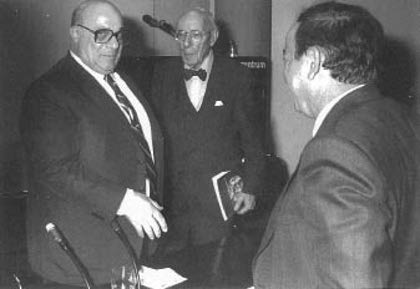

Yıl 1987, Almanya’da Köln’de bir seminer, konu Türkiye-Avrupa ilişkileri.
Denktaş ve Profesör Fritz Neumark da katılımcılar arasındalar. Tesadüfen her ikisini de 1975 yılından beri yakından tanıyan bendeniz de aynı yerdeyim.
Denktaş ve Neumark yan yana fotoğraf çektiriyorlar. Sonra beni de davet edip fotoğrafı tamamlıyorlar.
İkisi de tarihin içinden çıkagelmiş heykelleri anımsatıyorlar bana.
– Biri dünyanın en karmaşık ve sorunlu bölgesi Ortadoğu ile Doğu Akdeniz’in batmayan uçak gemisi Kıbrıs’tan gelmiş bir abide,
– Öteki Hitler Almanya’sının zulmünden kaçarak Türkiye’ye sığınan bir aydın adam, Prof. Neumark.
Ortak yönleri her ikisinin de bir anlamda Türkiye’ye, Anadolu’ya sığınmış olmaları. Prof. Neumark Avrupa faşizminden kaçarak özgürlüğünü Atatürk Türkiyesi’nde bulmaya çalışıyor; Denktaş ise emperyalizmin Doğu Akdeniz’deki baskılarından ezildiği için sırtını Anadolu’ya dayamaya çalışan bir siyasetçi.

Eylül 1987, Bonn, Rauf Denktaş, Prof. Fritz Neumark, Erol Manisalı
Faşizme ve emperyalizme fikren karşı durmaya çalışan bir akademisyen olarak benim yolum 1976’da her ikisi ile de kesişmiş.
Ve 1987’de Köln’de onlarla beraberim, sohbet ediyoruz, Türkiye-Avrupa, Türkiye-Batı ilişkilerini konuşuyoruz.
Prof. Neumark babamdan bile 20 yaş büyük. Her ikisi de zaman tünelinden çıkmış figürler gibiler ve sade vatandaş ile akademisyen bendeniz onlarla aynı karenin içindeyim.
Tabii ki ortak bir yönümüz var; orada kesişiyoruz, birleşiyoruz; her üçümüz de faşizme ve sömürüye karşıyız.
Aslında bizi bu fotoğraf karesinin içine zorla iteleyen güdü de bu. Yaşları, kültürleri, alışkanlıkları, hayat tarzları apayrı olan insanlar; bu ortak güdü sayesinde aynı kare içinde poz veriyoruz.
Aklımdan geçiyor, bu kareyi ancak Denktaş kamerasının içine yerleştirebilirdi, ama şu anda o da kameranın karşısında, eli düğmede olamaz ki...